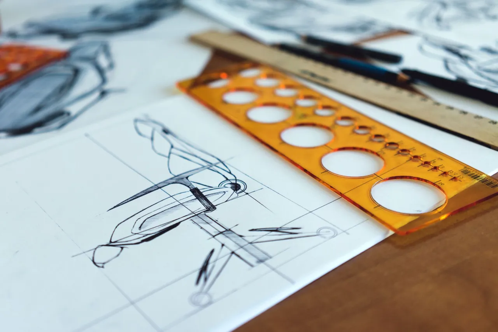

Beispielprojekt 01MöbelwerkstattMarkenkern · Zeichen · Geschäftspapiere · Website
Aus einer Werkstatt wird eine Marke.
- Ausgangslage
- Eine Möbelwerkstatt in zweiter Generation baut Stühle und Tische auf Maß. Die Arbeit ist hervorragend, der Auftritt über Jahre zusammengewachsen: drei Schriften, zwei Logos, kein roter Faden.
- Idee
- Wir haben in der Werkstatt gesucht, nicht im Rechner. Die Schablone, mit der dort jede Rundung entsteht, wurde zum Zeichen: eine Kante, ein Viertel, ein Kreis.
- Ergebnis
- Ein Zeichen, das sich stempeln, fräsen und sticken lässt. Eine Hausfarbe aus der Werkstatt. Ein Auftritt, der vom Lieferschein bis zum Transporter gleich aussieht.
